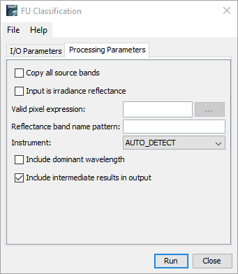

| Forel-Ule Algorithm For True Color Classification | |


Copy all source bands:
Checking this option, will copy all the source bands to the target product.
Multiply input reflectance with PI:
Checking this option will multiply the reflectance with PI.
Valid pixel expression:
This expression is used to validate pixels. Only valid pixels will be considerd for processing. If no expression is
specified
the first applicable expression for the input product will be applied as in Valid
expressions. If the
expression is set to
TRUE, then all pixels are considered to be valid. The ellipsis-button can be used to create a valid
expression.
Default valid expressions
| OLCI | WQSF_lsb.WATER and not WQSF_lsb.CLOUD |
| LQSF_WATER | |
| S2A_MSI | TRUE |
| S2B_MSI | TRUE |
| MERIS | l2_flags.WATER |
| not l1p_flags.CC_LAND and not l1p_flags.CC_CLOUD | |
| NOT l1_flags.LAND_OCEAN | |
| MODIS, SEAWIFS, CZCS | not l2_flags.LAND and not l2_flags.CLDICE |
| MODIS500 | TRUE |
Reflectance band name pattern:
The used reflectance band names must match the given pattern. Useful, if there is more then one spectrum in the
product.
Here a regular expression can be used. There is a nice tutorial on
.
Example expressions:
| Rrs.* | Will match any name witch starts with 'Rrs'. E.g.: Rrs_04 |
| reflec_\d\d_band | Will match any name witch starts with 'reflec_' and ends with '_band'. in the middle must be two digits. E.g.: reflec_12_band |
Instrument:
Allows to select which instrument specific settings shall be used, if the auto detection
fails.
Include dominant wavelength:
Whether or not to compute and include the dominant wavelength in the output. The default value is "false".
A laser emits light at just one wavelength. When this pure light is observed by the human eye we can calculate the
chromaticity coordinates and the hue angle in the x-y diagram. The wavelength is called the "dominant wavelength"
and is positioned on the locus, the outer boundary in the x-y diagram that can be observed.
The conversion from the hue angle to the dominant wavelength is done by a look-up-table.
Include intermediate results in output:
Whether or not the intermediate results shall be written to the target output. The default value is "true".
Intermediate results are results which are calculated during the computation of the hue angle.
The following bands belong to the intermediate results:
X3, Y3, Z3, chrX, chrY, hue_band, poly_corr